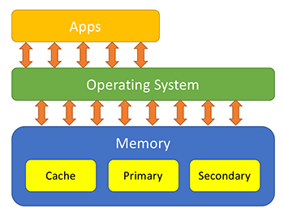

Memory management is the functionality of an operating system which handles or manages primary memory and moves processes back and forth between main memory and disk during execution. Memory management keeps track of each and every memory location, regardless of either it is allocated to some process or it is free. It checks how much memory is to be allocated to processes. It decides which process will get memory at what time. It tracks whenever some memory gets freed or unallocated and correspondingly it updates the status.
The addresses used in a source code. The variable names, constants, and instruction labels are the basic elements of the symbolic address space.
At the time of compilation, a compiler converts symbolic addresses into relative addresses.
The loader generates these addresses at the time when a program is loaded into main memory.
